Ocho lecciones, dos por semana, treinta y siete técnicas. Empiezas moviéndote solo en tu sala y terminas con triángulos, barridas de media guardia y pases de guardia. Es el mismo orden en que lo enseñamos en el dojo, y la primera lección se hace sin compañero.
Duración
4 semanas
Cada sesión
40–50 min
Sesiones
2 por semana
Técnicas
37 con video
El plan
Una lección a la vez. Marca cada técnica cuando la practiquen y el curso te lleva a la siguiente. Tu avance se guarda en este dispositivo.
El error más común del que empieza jiu jitsu es coleccionar técnicas. Cincuenta movimientos a medias no le ganan a cinco que salen sin pensar. Por eso esta guía tiene veinte cosas en un mes y no cien, y por eso cada semana se repite dos o tres veces en lugar de avanzar.
La Semana 1 se hace sin compañero. Las semanas 2, 3 y 4 necesitan a alguien que se deje mover — no hace falta que sepa nada, de hecho es mejor si no sabe, porque no va a competir contigo.
Y una advertencia honesta: el jiu jitsu no se aprende de video. Se aprende con resistencia y con alguien corrigiendo el detalle que la cámara no muestra. Lo que esta guía te da es llegar a tu primera clase sabiendo qué es un camarón, qué es un marco y por qué la cadera importa más que los brazos. Eso te ahorra tres meses.
El piso
Alfombra, tapete de yoga o cobijas dobladas. Nunca loseta ni cemento. Dos metros libres alrededor, sin muebles con esquinas.
El compañero
Que no sepa nada está bien. Que no compita es indispensable. Su trabajo es dejarse mover y darte resistencia solo cuando tú se la pidas.
Lento primero
Todo se aprende a un tercio de velocidad. La velocidad llega sola. Si aceleras antes de que el movimiento sea correcto, lo que memorizas es el error.
El tap
Dos golpecitos en el compañero o en el piso significan «ya». Se suelta al instante. Nadie se lastima en jiu jitsu por dar tap temprano; se lastima por darlo tarde.
En casa, nunca
Nada de llaves a las piernas, torceduras de rodilla ni llaves de talón. No se practican sin instructor, punto.
Nada de estrangulaciones a velocidad. El mata león de la Semana 4 se aplica en tres segundos y se suelta al primer toque.
Nada de derribos ni proyecciones en casa. Se necesita tatami de verdad y alguien que sepa recibir.
Si duele una articulación, se termina ahí. El dolor articular nunca es «aguantar tantito».
Lección 1 de 8Sesión 1 · Solo
Semana 1
La base: moverte solo y entender la guardia
Los cinco movimientos que sostienen todo, y después la posición que hace al jiu jitsu ser jiu jitsu. La primera sesión se hace solo; para la segunda ya necesitas compañero.
CalentamientoCalentamiento (8 min): movilidad de cadera y hombros, 20 sentadillas, 30 segundos de plancha, 20 rotaciones de tronco en el piso.
0 de 5 técnicas marcadas
Ver · BJJ | Fuga de CADERA (Shrimping) · HispaFightVer en YouTube ↗
Inicio: Acostado boca arriba, rodillas dobladas.
Planta un pie, gira sobre ese hombro y empuja el piso con el pie.
La cadera se aleja en diagonal; el cuerpo queda de lado en forma de C. No es un movimiento hacia arriba.
Los antebrazos se quedan al frente como marcos, nunca aplastados bajo el cuerpo.
Cruza la sala ida y vuelta, tres veces. Es el movimiento que más vas a usar en tu vida de jiu jitsu.
Todo escape en jiu jitsu es un camarón con adornos. Si el camarón es malo, el escape es malo.
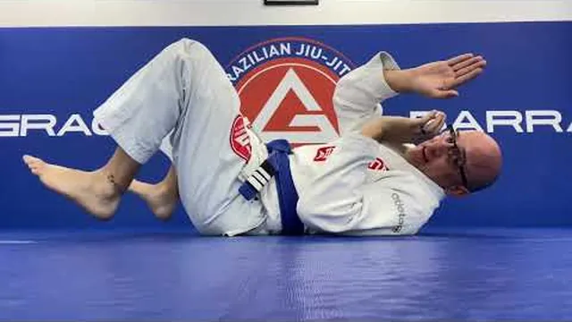
Ver · Escape de Cadera y Puente Alto · Jiu Jitsu en EspañoVer en YouTube ↗
Inicio: Acostado boca arriba, pies plantados cerca de los glúteos.
Pies cerca, empuja el piso y sube la cadera lo más alto que puedas.
El puente es en diagonal, sobre un hombro, no recto hacia el techo. Practica hacia los dos lados.
Cabeza y hombros trabajan: el peso pasa por los hombros, no por el cuello.
3 series de 15, alternando lados.
El puente es la única forma de mover a alguien que pesa más que tú. Los brazos nunca van a bastar.
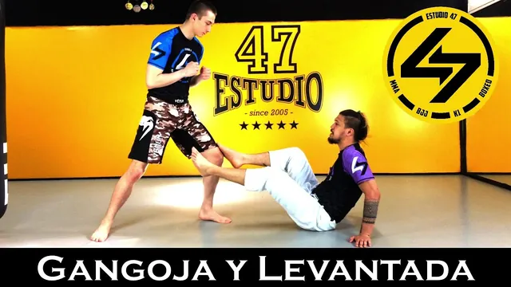
Ver · BJJ | Gangorra y LEVANTADA técnica · HispaFightVer en YouTube ↗
Inicio: Sentado, una mano apoyada atrás.
Siéntate sobre una cadera, mano de ese lado apoyada atrás, codo firme.
El pie contrario se planta; la otra pierna pasa por debajo hacia atrás.
Empuja con mano y pie a la vez y llegas de pie sin dar la espalda.
10 por lado. Al final, encadénala con el camarón: camarón atrás, levantada, repetir.
Levantarse mirando al frente es una habilidad. Levantarse de espaldas es un accidente esperando.
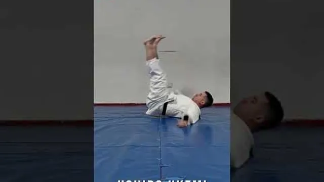
Ver · Ushiro ukemi (caída hacia atrás) · Judo GamanVer en YouTube ↗
Inicio: Sentado sobre alfombra o cobija doblada. Nunca sobre loseta.
Barbilla al pecho, como si sujetaras una naranja bajo la barbilla. La cabeza no toca nunca.
Rueda hacia atrás sobre la espalda redonda.
Al tocar el piso, golpea con las dos palmas abiertas a 45 grados del cuerpo.
Sube el nivel: cuclillas, después de pie. 10 por nivel.
Saber caer es lo único de esta guía que te sirve fuera del tatami, en una escalera o en la banqueta.
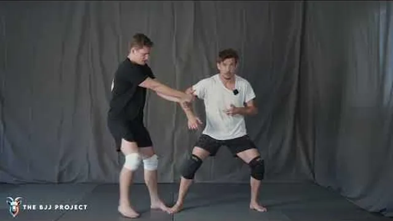
Ver · How Base, Posture and Connection Work in BJJ · SBGVer en YouTube ↗
Inicio: Concepto. Míralo antes de la semana 2.
La base es tener el peso repartido y el centro bajo: rodillas dobladas, cadera atrás, nunca alto y tieso.
La postura es la columna: cabeza arriba y espalda derecha aunque te estén jalando.
La conexión es que tus codos vivan pegados a tus costillas. Un brazo suelto es un brazo que te van a quitar.
Practícalo en el piso: en cuatro apoyos, que alguien te empuje suave y tú solo mantén la base.
Base abajo, postura arriba, codos adentro. Con esas tres cosas sobrevives tu primer mes en el tatami.
Lección 2 de 8Sesión 2 · Con compañero
Semana 1
La base: moverte solo y entender la guardia
CalentamientoCalentamiento (8 min): camarón cruzando la sala, 15 puentes, 10 levantadas técnicas. Ya son tuyos.
0 de 5 técnicas marcadas
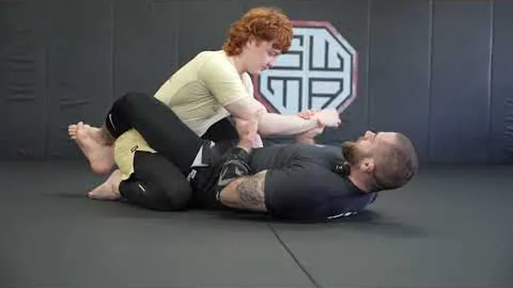
Ver · Guía definitiva de Guardia Cerrada BJJ · Escuela de Ver en YouTube ↗
Inicio: Abajo, tu compañero de rodillas entre tus piernas.
Tobillos cruzados detrás de su espalda baja; rodillas apretando sus costillas.
Codos adentro, manos arriba. Nunca los brazos estirados hacia él.
La cadera nunca queda plana: gira de un lado a otro buscando ángulo.
Agarres básicos: nuca y muñeca, o los dos bíceps. Sin agarre no hay guardia, hay un abrazo.
La guardia no es defensa. Es la única posición donde el de abajo ataca.
Ver · Breaking Posture in Closed Guard (The Complete GuideVer en YouTube ↗
Inicio: Abajo, guardia cerrada; él sentado derecho.
Agarre de nuca: jala su cabeza hacia abajo con el brazo y con las piernas a la vez.
Cuando su cabeza llegue a tu pecho, abrázala. Sin postura no puede pasar ni atacar.
La otra mano controla una muñeca.
Saca la cadera del centro para tener ángulo.
Cabeza abajo y muñeca controlada. Casi todo lo que te puede pasar desde arriba empieza con él erguido.
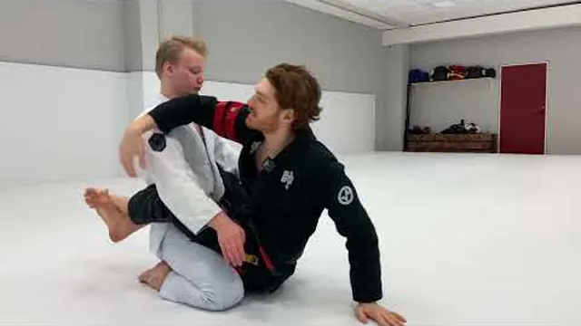
Ver · The BJJ Hip Bump Sweep · Stephan Kesting con Jon ThoVer en YouTube ↗
Inicio: Abajo; él se vuelve a sentar derecho.
Abre la guardia, siéntate sobre un codo y apoya esa mano atrás.
El otro brazo pasa sobre su hombro y engancha.
Sube la cadera y métela en su axila, como si te pararas de lado.
Gira sobre él y cae en montada. No vuelvas a acostarte a medio camino.
Siéntate, cadera a la axila, síguelo. Es la primera barrida que funciona sin gi.
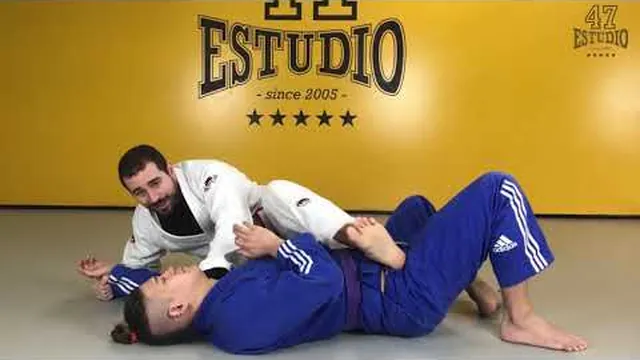
Ver · BJJ | RASPADO de TIJERA · HispaFightVer en YouTube ↗
Inicio: Abajo, guardia cerrada; agarre de muñeca y nuca.
Abre, mete una espinilla cruzando su estómago; la otra pierna plana junto a su rodilla.
Jálalo sobre tu espinilla con los dos agarres — sin ese jalón la tijera no existe.
Tijera: la espinilla empuja y la pierna de abajo corta.
Cae en montada. Si él abre la base para defenderla, ahí aparece el golpe de cadera.
Tijera y golpe de cadera son pareja: cuando defiende una, la otra está lista.
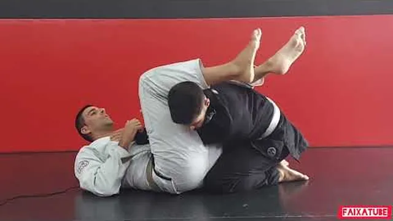
Ver · Aprende la llave de brazo desde la guardia, paso a pVer en YouTube ↗
Inicio: Abajo; él empuja tu pecho con un brazo.
Atrapa esa muñeca y fíjala contra tu pecho.
Pie en su cadera, gira 90 grados y saca la cadera del centro.
La pierna del lado contrario pasa por encima de su cabeza; rodillas apretadas.
Sube la cadera despacio. Se aplica lento y se suelta al primer toque de su mano.
Empuja = palanca. Cuando alguien estira un brazo dentro de tu guardia, te lo está regalando.
Cierre de la semanaRepite la sesión 1 dos veces más esta semana. Son 25 minutos y es lo que más te va a servir.
Lección 3 de 8Sesión 1 · Arriba
Semana 2
Controlar arriba, sobrevivir abajo
El juego de arriba no es de fuerza, es de peso bien puesto. Y abajo, los cuatro escapes que te van a sacar de apuros los primeros seis meses.
CalentamientoCalentamiento (8 min): camarón, puentes, y 2 minutos de «pummel» en pareja buscando el underhook.
0 de 5 técnicas marcadas
Ver · 4 Formas de mantenerse en la montada · Cesar Alonso Ver en YouTube ↗
Inicio: Arriba, sentado sobre su abdomen.
Rodillas apretando las costillas, pies enganchados bajo sus muslos (ganchos de uva).
El peso va en la cadera, no en las manos. Las manos son para el equilibrio.
Cuando empuje tu pecho, camina las rodillas hasta sus axilas: montada alta.
Cuando haga puente, manos al piso arriba de su cabeza y espera a que baje.
Empuja = sube. Puente = apoya. Solo esas dos respuestas te mantienen ahí un round completo.
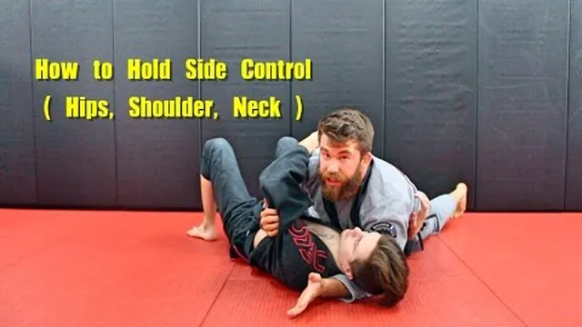
Ver · How to Hold Side Control Concepts · ChewjitsuVer en YouTube ↗
Inicio: Arriba, pecho cruzado sobre su pecho.
Pecho con pecho, cadera baja, dedos de los pies empujando el piso.
Brazo cercano bajo su cabeza; brazo lejano bloqueando su cadera o el codo pegado a su costado.
Codo y rodilla cierran los huecos. Que no entre luz entre los dos cuerpos.
Sigue su movimiento: cuando gire hacia ti, deja caer el peso.
El de arriba no aprieta: se acomoda. Apretar cansa; el peso bien puesto no.
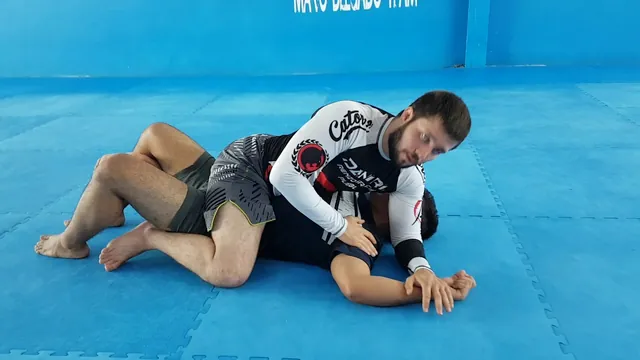
Ver · Americana desde la monta de jiu jitsu · Daniel Niño Ver en YouTube ↗
Inicio: Arriba en montada; él empuja tu pecho.
Fija su muñeca al piso junto a su cabeza, con el codo doblado a 90 grados.
Tu otra mano pasa bajo su codo y agarra tu propia muñeca: figura cuatro.
Mantén su muñeca en el piso y desliza su codo hacia su cadera, como pintando el piso.
Despacio. Se suelta al primer toque de su mano.
Tu primera sumisión debe ser una que puedas aplicar sin lastimar a nadie. Esta es esa.
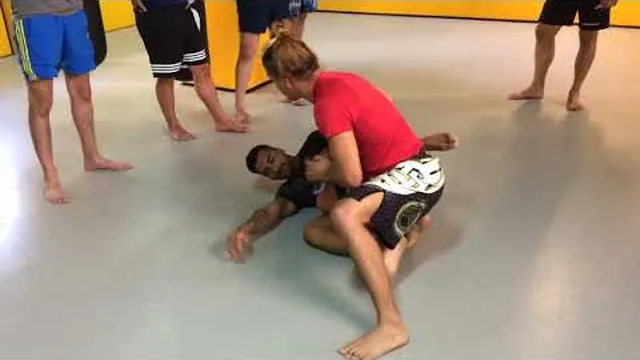
Ver · BJJ No-Gi | PASE de GUARDIA deslizando rodilla · HisVer en YouTube ↗
Inicio: Arriba, guardia abierta, sujetando una pierna.
Desliza la rodilla cercana cruzando su muslo, hacia el piso.
Cabeza abajo y brazo bajo su cabeza mientras te deslizas: si él consigue el underhook, el pase muere.
Libera la pierna de atrás y baja la cadera al piso.
Acomódate en control lateral.
Rodilla cruzando el muslo, cabeza bajo su cabeza. Es el pase que más se usa en el mundo.
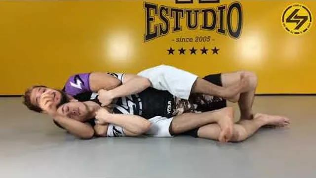
Ver · BJJ | La ESPALDA (Control de Espalda) · HispaFightVer en YouTube ↗
Inicio: Arriba, detrás de él.
Cinturón de seguridad: un brazo sobre el hombro, el otro bajo la axila, manos unidas en su pecho.
Ganchos: los dos pies por dentro de sus muslos. Nunca cruces los tobillos.
Pecho pegado a su espalda, cabeza del lado del brazo de abajo.
Si gira, cae hacia ese lado y quédate sobre su cadera.
La espalda es la posición que gana combates. Y a diferencia de la montada, aquí él no te ve venir.
Lección 4 de 8Sesión 2 · Escapes
Semana 2
Controlar arriba, sobrevivir abajo
CalentamientoCalentamiento (8 min): camarón, puentes, levantada técnica, y 1 minuto acostado con su peso encima solo respirando.
0 de 5 técnicas marcadas
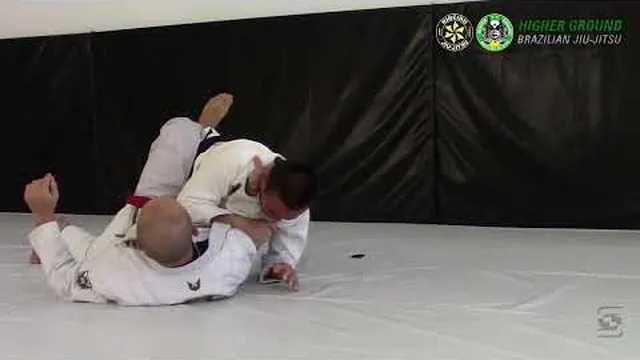
Ver · Analizando el escape de montada con el puente o «upaVer en YouTube ↗
Inicio: Abajo, él en montada.
Atrapa un brazo: su muñeca con las dos manos, pegada a tu pecho. No empujes hacia arriba.
Atrapa su pie del mismo lado con tu pie, por fuera.
Pies cerca de tu cadera; puente fuerte en diagonal sobre el hombro atrapado.
Rueda por encima de ese hombro y cae dentro de sus piernas.
Sin atrapar el brazo y el pie, el puente solo lo levanta y lo vuelve a sentar más cómodo.
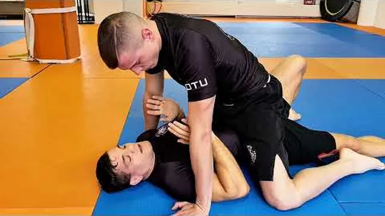
Ver · How to do the Elbow Knee Escape from Bottom Mount · Ver en YouTube ↗
Inicio: Abajo; el upa falló porque él apoyó las manos en el piso.
Marco: un antebrazo en su cadera, la otra mano en su rodilla.
Camarón alejando la cadera hacia el lado del marco.
Mete la rodilla de ese lado entre los dos cuerpos, como cuña.
Saca el pie y recupera la guardia. Siempre hay un lado que sí.
Puente y codo-rodilla son pareja. Cuando uno falla, el otro ya está abierto.
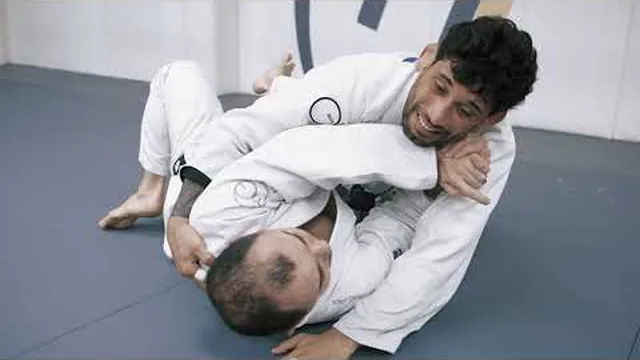
Ver · 4 escapes de 100 kilos que necesitas conocer · EscueVer en YouTube ↗
Inicio: Abajo, él con el pecho cruzado sobre el tuyo.
Primero los marcos: antebrazo en su cuello o su hombro, mano en su cadera, codos adentro.
Puente pequeño para despegarlo y, en ese instante, camarón.
Rodilla cercana cruzando su estómago; los pies encuentran sus caderas.
Si el camarón no alcanza: gira hacia él hasta tus rodillas y sal por delante.
Primero los marcos, luego la cadera. Al revés, te vuelve a caer encima con más peso.
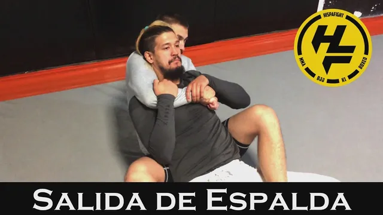
Ver · BJJ | Cómo SALIR de la ESPALDA en Jiu Jitsu · HispaFVer en YouTube ↗
Inicio: Abajo, él con ganchos y cinturón.
Barbilla abajo y las dos manos sobre el brazo que pasa por tu hombro. Ese brazo es el peligro.
Jálalo hacia abajo y cruzando; que su segunda mano nunca llegue detrás de tu cabeza.
Desliza la cadera hacia ese lado hasta pegar los hombros al piso.
Patea el gancho de ese lado, gira hacia él y mete la rodilla → guardia.
Dos manos contra un brazo. Es la única cuenta que te conviene en esa posición.
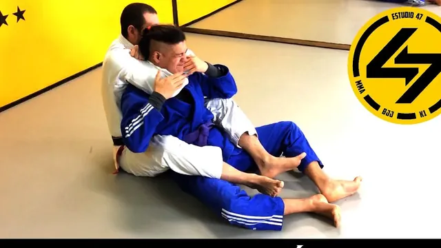
Ver · BJJ | MATALEÓN · HispaFightVer en YouTube ↗
Inicio: Arriba, control de espalda. Se aprende lento o no se aprende.
El brazo de arriba se desliza bajo su barbilla, con el codo alineado con el mentón. Si el codo queda de lado, es un cuello, no una estrangulación: no sirve y lastima.
Esa mano agarra tu otro bíceps; la otra mano va detrás de su cabeza.
Aprieta cerrando los codos, despacio, en tres segundos.
Se suelta al primer toque de su mano. Sin excepciones, sin «un segundo más».
Codo bajo la barbilla, aprieta como cerrar una puerta despacio. Nunca a la fuerza y nunca rápido.
Cierre de la semana5 rondas de 2 minutos empezando siempre en la peor posición. No ataques: sobrevivir es la habilidad.
Lección 5 de 8Sesión 1 · Ataques desde la guardia
Semana 3
Ahora atacas tú
Hasta aquí aprendiste a no perder. Esta semana empiezas a ganar. Las cuatro sumisiones que salen desde abajo, y las barridas que funcionan cuando el otro ya no se deja.
CalentamientoCalentamiento (8 min): camarón, puentes, levantada técnica. Después 2 minutos abriendo y cerrando la guardia sobre tu compañero, sin atacar, solo sintiendo el candado.
0 de 4 técnicas marcadas
Ver · BJJ | Triángulo · HispaFightVer en YouTube ↗
Inicio: Abajo, guardia cerrada; él tiene un brazo adentro y uno afuera.
Controla la muñeca del brazo que está adentro y empújala cruzando su cuerpo.
Pie en la cadera del lado contrario, saca la cadera y sube la pierna sobre su hombro.
Cruza el tobillo detrás de tu propia rodilla: eso es el candado del triángulo.
Jala su cabeza hacia ti y aprieta las rodillas. Despacio, y sueltas al primer tap.
Un brazo adentro y uno afuera es la señal. Si los dos están adentro o los dos afuera, no hay triángulo.
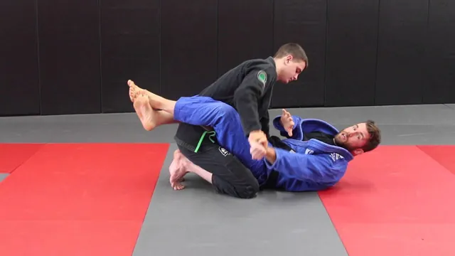
Ver · Kimura From Closed Guard For White Belts · ChewjitsuVer en YouTube ↗
Inicio: Abajo; él apoya una mano en el tatami junto a tu costado.
Siéntate hacia ese lado y agarra su muñeca con la mano contraria.
Tu otro brazo pasa por encima de su hombro y agarra tu propia muñeca: figura cuatro.
Saca la cadera hacia ese lado y sube tu pierna sobre su espalda para que no ruede.
Gira su mano hacia su espalda, muy despacio.
Mano apoyada en el tatami es un regalo. Aprende a verla.
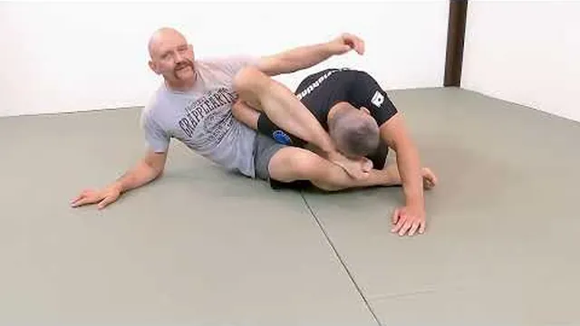
Ver · The First Omoplata You Should Learn · GrappleartsVer en YouTube ↗
Inicio: Abajo, guardia cerrada; él empuja tu pecho con un brazo.
Controla esa muñeca y pásala cruzando tu cuerpo.
Pie en la cadera, gira 90 grados como para la palanca, pero sube la pierna por ENCIMA de su brazo.
Engancha tu pierna detrás de su hombro y siéntate.
Esta semana solo la entrada: llegas a sentarte y ahí paras.
Es la palanca con la pierna en lugar del brazo. Misma puerta, otra llave.
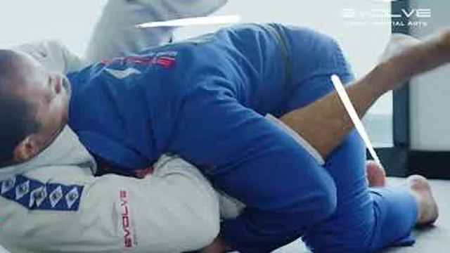
Ver · Guillotine Choke from Full Guard · ChewjitsuVer en YouTube ↗
Inicio: Abajo; él baja la cabeza dentro de tu guardia.
Cuando la cabeza baje, pasa el brazo por debajo de su cuello, palma hacia arriba.
Agarra tu propia muñeca con la otra mano, codos apretados.
Sube la cadera y estira el cuerpo hacia atrás. La presión viene del pecho, no del brazo.
Suelta al primer tap. Esta es de las que se cierran rápido: ve con mucho cuidado.
Cabeza abajo dentro de tu guardia es una guillotina esperando.
Lección 6 de 8Sesión 2 · Barridas y media guardia
Semana 3
Ahora atacas tú
CalentamientoCalentamiento (8 min): 2 minutos de puentes, 2 de camarón, y 3 rondas de 30 segundos de pummel buscando el underhook.
0 de 4 técnicas marcadas
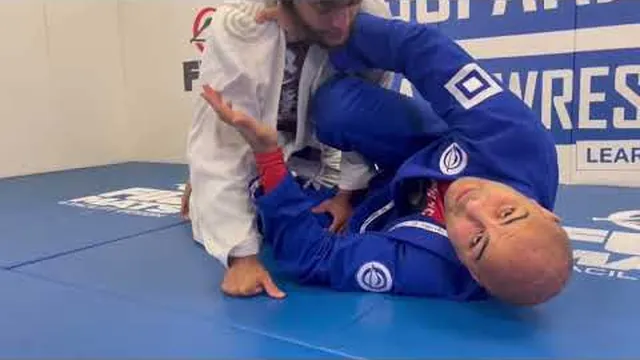
Ver · How to Do the Perfect Knee Shield · Bernardo FariaVer en YouTube ↗
Inicio: Abajo, con una pierna de él atrapada entre las tuyas.
La rodilla de arriba cruza su pecho como un escudo, la espinilla pegada a su cuerpo.
El antebrazo del mismo lado hace marco en su hombro o su cuello.
Quédate de lado, nunca plano de espaldas.
Desde aquí él no puede aplastarte ni pasar. Aguanta 60 segundos así, solo aguantando.
La media guardia mala es estar plano. La buena es estar de lado con la rodilla adentro.
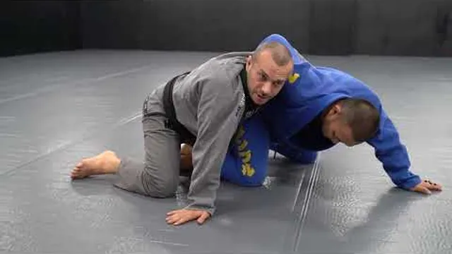
Ver · The main sweep to know from half guard · Lachlan GilVer en YouTube ↗
Inicio: Abajo, media guardia; consigues el underhook.
Mete el brazo bajo su axila y sal de abajo hasta quedar de costado, pegado a él.
Tu cabeza sale del lado de su cadera, no bajo su pecho.
Engancha su pierna lejana con tu pie y empuja con el hombro hacia ese lado.
Caes arriba. Ese underhook es lo que hace todo el trabajo.
Sin underhook no hay barrida. Primero el brazo, luego la cadera.
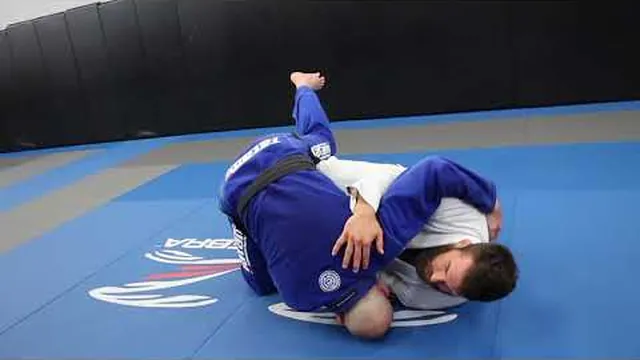
Ver · The 1st Butterfly Guard Sweep I Teach · ChewjitsuVer en YouTube ↗
Inicio: Sentado, con los dos pies enganchados por dentro de sus muslos.
Siéntate derecho, pecho pegado, agarra una axila o el cinturón.
Sácale el brazo lejano del piso con un jalón para que no pueda apoyarse.
Cae hacia tu hombro y levanta con el gancho del mismo lado al mismo tiempo.
Ruedas y caes arriba, en montada o control lateral.
El gancho levanta, el hombro tira. Si solo levantas, no se cae.
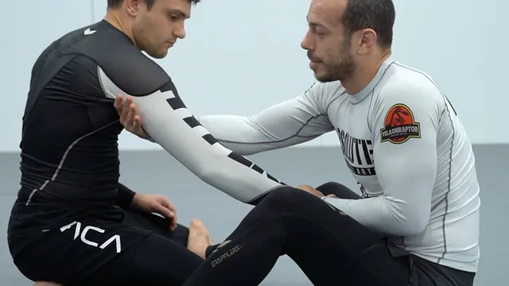
Ver · Arm Drag from Seated Guard · Lachlan GilesVer en YouTube ↗
Inicio: Sentado frente a él, los dos de rodillas o en guardia abierta.
Agarra su muñeca con una mano y su tríceps con la otra.
Jala el brazo cruzando tu cuerpo mientras giras la cadera hacia ese lado.
Su espalda queda expuesta: mete el pecho y sube por atrás.
Pon el cinturón de seguridad y un gancho antes de hacer nada más.
El jalón de brazo es la forma más barata de llegar a la espalda que existe.
Lección 7 de 8Sesión 1 · Pases de guardia
Semana 4
Pasar, presionar y terminar
El último bloque: cómo atravesar las piernas de alguien que no quiere dejarte, cómo hacer que tu peso pese, y cómo cerrar. Al final, lo más importante de todo el curso: cómo rolar por primera vez sin lastimarte y sin lastimar a nadie.
CalentamientoCalentamiento (8 min): movilidad de cadera, 20 sentadillas, y 2 minutos de 'pasar sin manos' — solo caminando alrededor de sus piernas.
0 de 4 técnicas marcadas
Ver · BJJ | Pase de TOREADA Básica · HispaFightVer en YouTube ↗
Inicio: De pie o de rodillas, frente a su guardia abierta.
Agarra sus dos espinillas o sus pantalones a la altura de las rodillas.
Empuja sus piernas hacia un lado y hacia abajo, como toreando.
Da un paso amplio hacia el lado contrario y corre alrededor de sus piernas.
Cae en control lateral con el pecho pesado. La velocidad importa más que la fuerza.
Sus piernas a un lado, tú al otro. Nunca pases por en medio.
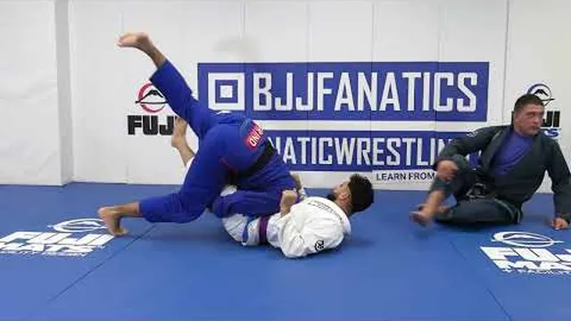
Ver · How to Pass With Over Under · Bernardo FariaVer en YouTube ↗
Inicio: Arriba, dentro de su guardia cerrada o abierta, con sus piernas altas.
Mete los hombros bajo sus dos piernas y camina hacia adelante.
Junta sus rodillas contra su propio pecho: eso lo apila y le quita el movimiento.
Camina la cadera hacia un lado sin soltar la presión.
Baja el pecho y llega a control lateral por el lado que abriste.
Apilar es incómodo, no doloroso. Si se queja de la espalda, baja la presión.
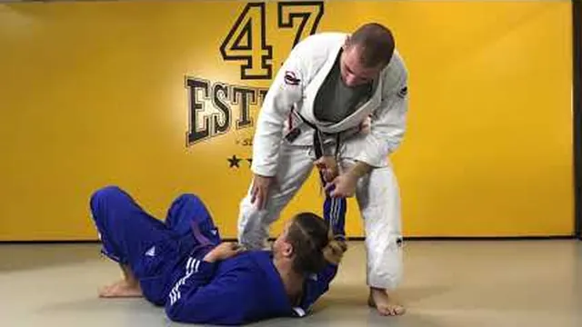
Ver · BJJ | Rodilla en estómago · HispaFightVer en YouTube ↗
Inicio: Arriba, en control lateral.
Una mano en su cadera lejana, la otra en su hombro lejano.
Sube la rodilla cruzando su estómago, el pie enganchado en su cadera cercana.
La otra pierna bien abierta, pie plano, cadera alta.
Ligero en las manos: la rodilla carga el peso. Aguanta 3 segundos y cambia de lado.
Es la posición más incómoda del jiu jitsu para el de abajo. Por eso funciona.
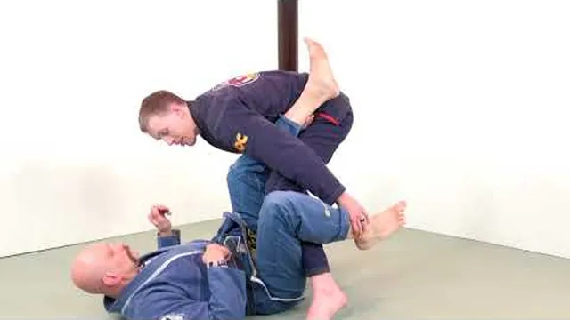
Ver · How To Do the Leg Drag Pass · GrappleartsVer en YouTube ↗
Inicio: Arriba, frente a su guardia abierta.
Agarra su tobillo y su rodilla del mismo lado.
Jala esa pierna cruzando tu cuerpo y siéntate encima del muslo.
Su cadera queda torcida y ya no puede volver a ponerte enfrente.
Camina hacia su cabeza y cae en control lateral o toma la espalda.
No pasas por encima ni por un lado: le tuerces la cadera y ya no hay guardia.
Lección 8 de 8Sesión 2 · Espalda, finalizaciones y tu primer rolar
Semana 4
Pasar, presionar y terminar
CalentamientoCalentamiento (8 min): camarón, puentes, y 2 minutos de 'paseo en la espalda' — él gatea con tus ganchos puestos y tú te quedas arriba.
0 de 5 técnicas marcadas
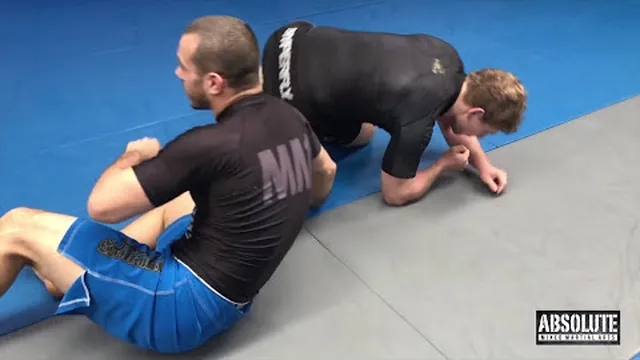
Ver · Taking the Back from Turtle · Lachlan GilesVer en YouTube ↗
Inicio: Él en cuatro apoyos; tú a su lado.
Pecho sobre su espalda, rodilla pegada a su cadera.
Cinturón de seguridad: brazo sobre el hombro, brazo bajo la axila, manos unidas.
Siéntate sobre la cadera del lado del brazo de abajo y jálalo a tu regazo.
Primer gancho, después el segundo. Nunca cruces los tobillos.
No lo volteas: te sientas y él cae solo encima de ti.
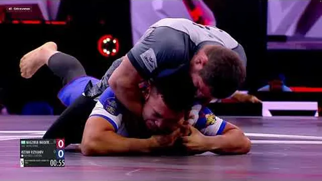
Ver · Roadmap to the RNC · Less Impressed More InvolvedVer en YouTube ↗
Inicio: Arriba, control de espalda con los dos ganchos.
Primero la pelea de manos: su barbilla no puede tapar tu brazo.
El codo tiene que quedar alineado con su mentón, no de lado. De lado es un cuello, no una estrangulación.
Esa mano agarra tu bíceps; la otra va detrás de su cabeza, no empujando el cuello.
Cierra los codos, no jales. Tres segundos. Sueltas al primer toque.
Si aprietas y no pasa nada, el codo está mal puesto. Nunca es cuestión de más fuerza.
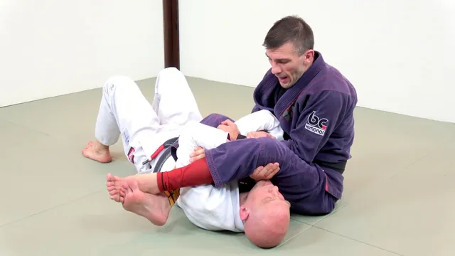
Ver · Armbar From Mount · Matt Arroyo Jiu JitsuVer en YouTube ↗
Inicio: Arriba, en montada alta.
Aísla un brazo y abrázalo contra tu pecho.
Desliza la rodilla de ese lado hasta su oreja y sube la otra rodilla detrás de su cabeza.
Pasa la pierna por encima de su cara, pie plano junto a su oreja.
Siéntate hacia atrás despacio, rodillas juntas, pulgar hacia arriba. Detente al tap.
Rodillas apretadas. Si se abren, se escapa el brazo.
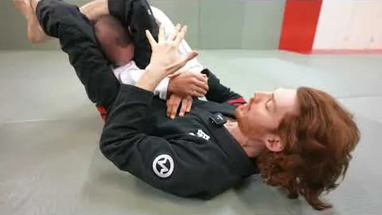
Ver · Triangle Choke: The Detail That Changes Everything ·Ver en YouTube ↗
Inicio: En triángulo pero sin presión.
Casi siempre falta ángulo: gira tu cadera para quedar perpendicular a él, no de frente.
Jala su brazo atrapado cruzando tu pecho para que su propio hombro le apriete el cuello.
Sube la pierna de arriba: el pie va sobre tu rodilla, no sobre tu espinilla.
Aprieta las rodillas y sube la cadera. Si sigue sin apretar, suelta y arma de nuevo.
El triángulo aprieta con el ángulo, no con la fuerza de las piernas.
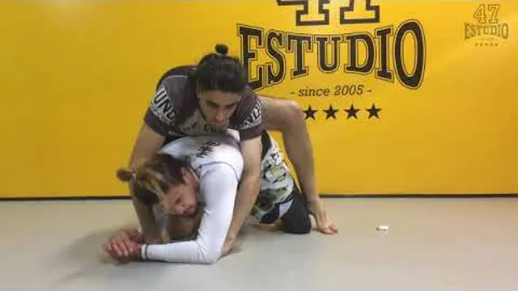
Ver · BJJ | Cómo hacer SPARRING (y cómo NO) · HispaFightVer en YouTube ↗
Inicio: De pie o de rodillas, frente a alguien con más experiencia.
Choca la mano antes de empezar. Siempre.
Ve al 40 por ciento. El que va al 100 en su primer rolar es el que se lastima.
Da tap temprano y sin pena. El tap no es perder, es cómo se entrena.
Si algo duele en una articulación, tap inmediato. No se aguanta nada.
Al terminar, choca la mano otra vez. Pierdas o ganes.
Nadie se lastima por dar tap temprano. Se lastiman por darlo tarde.
Al terminarEl siguiente paso
Después de estas cuatro semanas
Si hiciste el mes completo llegas a tu primera clase con cadera que se mueve sola, marcos que aguantan peso y la calma de saber que estar abajo no es estar perdiendo. Quien empieza de cero tarda unos tres meses en llegar ahí.
Lo que sigue no cabe en ninguna guía: rolar. Resistencia real, alguien que no coopera, y un coach corrigiendo el detalle en el momento en que ocurre.
Clase
Días
Horario
Coach
Jiu Jitsu adultos
Martes y jueves
08:30 – 10:00
Ken
Jiu Jitsu adultos
Martes y jueves
20:00 – 21:30
Gabriel
Jiu Jitsu Chicas — solo mujeres
Lunes
09:00 – 10:30
Arturo
Lucha / Wrestling
Miércoles y viernes
08:30 – 10:00
Mato
Open Mat (práctica abierta)
Sábado
08:30 – 10:30
Ken asiste
Cuando quieras probarlo con resistencia real
Escríbenos y te decimos qué horario te conviene, qué llevar el primer día y cómo funcionan las primeras semanas. Estamos en Huizaches 22, San Mateo Acatitlán, si prefieres pasar y verlo.
◆ Becas disponibles ◆Si el precio es el problema, dilo sin pena. Tenemos opciones.
Primera lección hecha
Los cinco movimientos base ya están
Camarón, puente, levantada, caída y base. Todo lo que viene se apoya en esos cinco. Si quieres, grábate haciendo el camarón y mándanoslo: te contestamos con un audio diciéndote qué corregir antes de que se te haga costumbre.
Dos lecciones en una semana, y ya sabes moverte solo y entender la posición que hace al jiu jitsu ser jiu jitsu. Mucha gente lleva dos meses de clases y no tiene eso claro.
Ya sabes controlar arriba y salir de abajo. Y ya te habrás dado cuenta de algo: todo funciona contra alguien que se deja, y casi nada contra alguien que no. Esa diferencia es el deporte completo, y es lo único que no se puede practicar en tu sala.
Triángulo, kimura, omoplata, guillotina y las barridas de media guardia. Esto ya no es sobrevivir: es jiu jitsu de verdad. Si quieres ver cómo se siente contra alguien que no coopera, el Open Mat del sábado de 8:30 a 10:30 es práctica abierta.
Treinta y siete técnicas, ocho lecciones. Llegas a una primera clase sabiendo pasar, presionar, escapar y atacar — y sabiendo rolar sin lastimar a nadie. Quien empieza de cero tarda medio año en llegar ahí.
Lo que falta es gente. Escríbenos y te decimos qué horario te conviene.
Tu avance se guarda solo en este teléfono. Si cambias de teléfono o borras el
navegador, se pierde. Mándate tu enlace por WhatsApp y podrás continuar desde donde te quedaste,
en cualquier aparato.
El Dojo · Huizaches 22, San Mateo Acatitlán, Valle de Bravo Mapa ·
eldojo.mx ·
WhatsApp